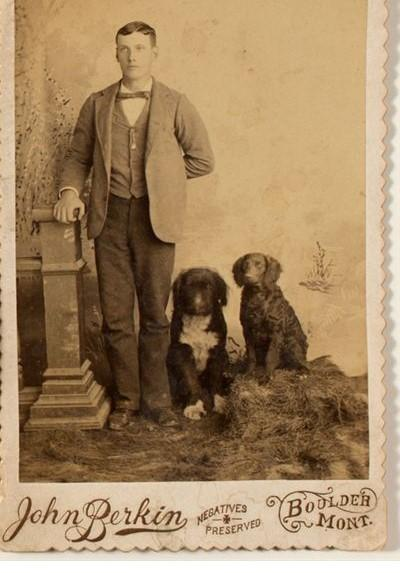

Beckrich, Marshall took a second childhood trip to the Pacific with Beckrich, Ken and Van Horn, Lisa in the late 1990s. There, they met Jaquish, Fern and Jaquish, Inis.
Testing Unordered List (margin of first point should pull in):
- Seals
- Cute, furry
- Furry?
- I think that's right...
- Furry?
- Cute, furry
- Orcas
- Not whales
Testing Ordered List (margin of first point should pull in):
- Boats
- Our beautiful boaters
- Our beautiful boaters are encountering turbulence
- Oceans
- Waves
- Remember that Wavves guy?
- He's a landlord now
- I See Seaweed
- Waves
Sample H2
Whales.
Sample H3
Whales.
Create some additional space before sample image. Distance between this text and above should be the same. Distance between this text and image below can be either:
- The same (trickier to nail because of line-height applied to paragraph text)
- Closer (current, although technically the same margin is being applied -- img just does not have a line-height)
- Further

And some more text to test space between here and image.